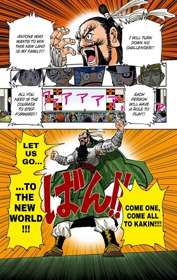

1999 Anime vs. 2011 Anime
There are actually 2 different versions of the anime as well, one from 1999 and one from 2011, there are slight art differences in some characters. try hovering over some characters below to see the differences.
The Manga
The anime was actually adapted from a popular manga series that started in 1998 and is still going, in America the manga was featured in Shonen Jump
Although I said the manga is still going it has been on hiatus for over a year due to the authors health issues, you can see a live hiatus chart here. Normally manga is printed in black and white, however due to the absence of new material from the author many chapters are being rereleased in color, hover over the image below to see the full color page of the manga.
